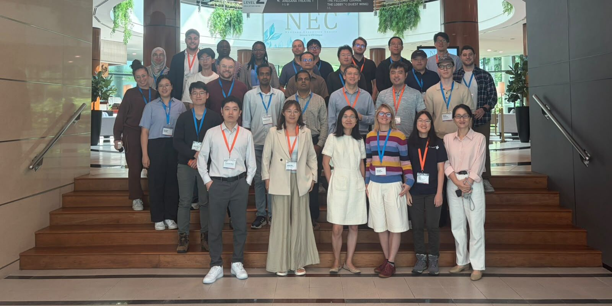
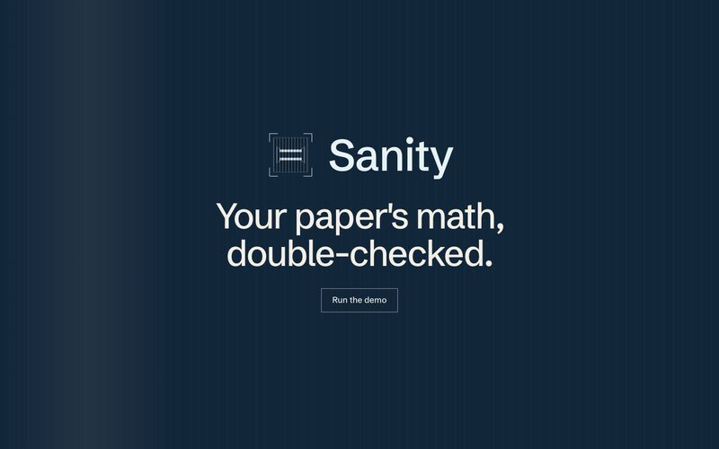
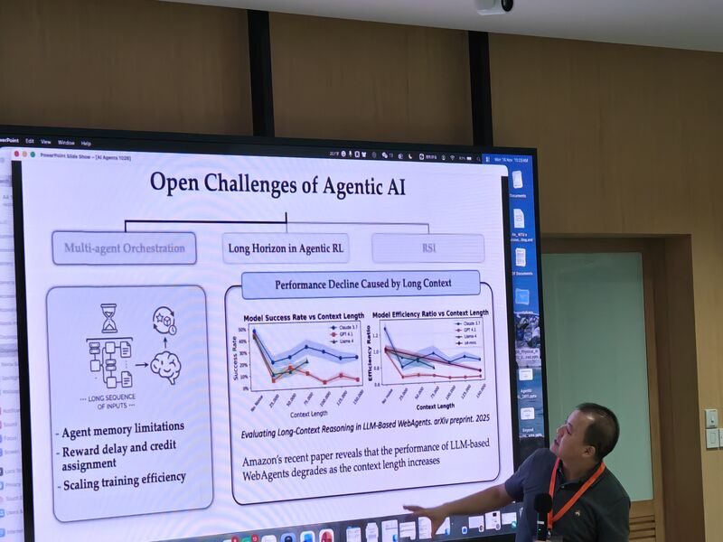
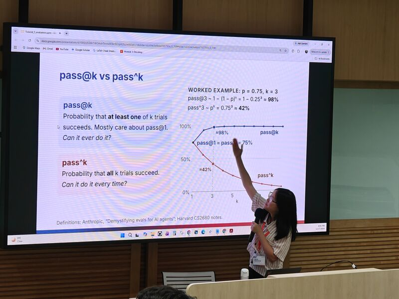
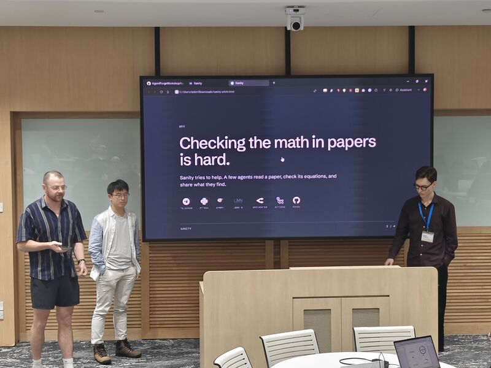
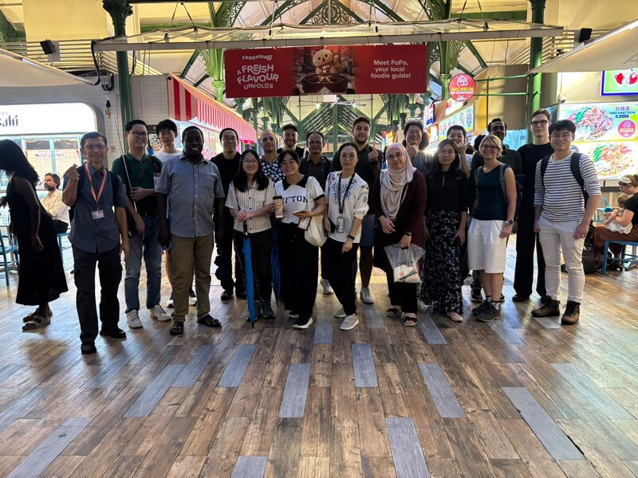

Open source · Built together
Reliable, frontier, responsible AI for science
AgentForge is an open community of scientists who build AI agents for research, test them, and judge when to trust them. It began with a hands-on workshop at Nanyang Technological University, Singapore, on 15–19 November 2026, supported by Schmidt Sciences. Everything we make is open, and anyone can build on it.

What we stand for
An AI agent is more than a chatbot: it pursues a goal by planning steps and calling tools and data sources, with varying degrees of human oversight. We do not aim to turn scientists into AI developers. We build agents so that researchers understand the tools they use.
Reliable
Check before you trust
A confident answer is not a scientific result. We test agents the way we test methods: how was the output produced, is the process valid, and can it be reproduced?
Frontier
Work with today's tools
Memory, tool use through MCP, Agent Skills, multi-agent systems: we build with current agent technology, adapt it to real research questions, and share what works and what does not.
Responsible
Judgment stays with scientists
Scientists know the questions, the methods and the standards of evidence. They should help decide how AI is designed, evaluated and brought into research, and stay responsible for the results.
Where AgentForge came from
AgentForge was inspired by a Schmidt Sciences community event: the Schmidt Research Software Engineering Training Programme in Oxford (11–20 September 2025). For ten days, fellows from very different fields worked in small teams and built research software together, hands-on. Some of us met there.
That experience of learning by building, side by side, is what we wanted to pass on. It shaped how we designed AgentForge: tutorials with code that runs, followed by a hackathon in which teams build and evaluate their own research agents. We want to carry that spirit forward, from one Schmidt Sciences community to the next and beyond.
What we built
All materials from AgentForge 2026 are public. Use them in your own teaching and research.
Five open tutorials
Slides and Colab notebooks that run without any local installation.
- From chatbot to agent
- Agentic memory
- Agents on platforms: MCP and Agent Skills
- Multi-agent systems
- Evaluating agents
mini_agent 2.0.0open source
The teaching agent from Tutorial 1: a small, complete AI agent for the terminal and for Python, with the agent loop in plain sight. Released under the MIT licence; it installs with one command on macOS, Linux and Windows.
github.com/Superionichuan/mini_agentHackathon projects
Teams built research agents during the week, from a checker that finds mathematical errors in papers to an agent that judges how novel a research idea is. Their code is public.
See the showcaseFrom the hackathon
Working interfaces, built and evaluated during the workshop.

Sanity
Finds mathematical errors in papers: the language model proposes, a computer algebra system and Lean decide.
Try the live site

TripPlanner
Plans trips to academic conferences and writes a report that compares the options.
See the codeThe week in pictures




Coming next: the AgentForge Playbook
An open guide to running a hands-on AI-agent workshop for scientists, drawn from what worked, and what did not, at AgentForge 2026.
Learn it
How we designed the programme: tutorials, hackathon, evaluation, timeline and budget.
Follow it
Templates and checklists that other organisers can reuse for their own workshops.
Write it together
We will open the playbook to contributions, so that every workshop that uses it can make it better.
People
AgentForge 2026 was made by its organisers, speakers, tutorial leads and every participant who built something during the week.
Keynote speakers
- Prof. Bo AnPresident's Chair Professor and Head of the Division of Artificial Intelligence, College of Computing and Data Science, NTUAI Agents: From Scaffolding to Self-Improvement
- Dr. Zekun RenProject Leader at BEARS and Co-founder of PUDAApplication of Agentic AI in materials science
- Mr. Volodymyr IermolaievCo-founder and CEO of Ajentik AI, SingaporeApplied Agentic AI: From Concepts to Real-World Applications
Organising team
- Dmytro KosiachevskyiSchmidt AI in Science Postdoctoral Fellow, National University of Singapore
- Hailan MaSchmidt AI in Science Postdoctoral Fellow, Nanyang Technological University
- Nanta SophonratSchmidt AI in Science Postdoctoral Fellow (Alum), University of Michigan
- Shichuan SunSchmidt AI in Science Postdoctoral Fellow, Nanyang Technological University
- Yukun XueMaster's candidate, Xidian University; Tsinghua University; ByteDance Seed
- Chengran YangSchmidt AI in Science Postdoctoral Fellow, Nanyang Technological University
Tutorial leads
- Martin Hoffmann PetersenNTU AI4X Postdoctoral Fellow, Nanyang Technological University
- Dmytro KosiachevskyiNational University of Singapore
- Emha Bayu MiftahullatifPhD student, Materials Science and Engineering, NTU
- Shreyas Pethe DineshPhD student, Materials Science and Engineering, NTU
- Nanta SophonratUniversity of Michigan
- Shichuan SunNanyang Technological University
- Yukun XueXidian University
- Chengran YangNanyang Technological University
Names are listed alphabetically by family name.
Open source, built together
We want AgentForge to grow as an open community in which scientists from every field build, test and share AI agents for research, and learn from each other's mistakes as much as from their successes.
Teach with it
Run the tutorials in your own course or group meeting. The notebooks open in Colab, and the slides are in the repository.
Get the tutorialsBuild on it
Extend mini_agent or a hackathon project for your own research, and send improvements back as a pull request.
Browse the codeTell us what you need
Found a bug, or want a tutorial on a topic we have not covered? Open an issue. New activities will be announced on this page.
Open an issue